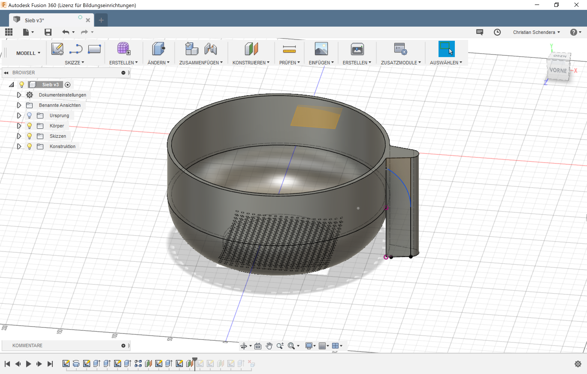

Fabacademy
Lessons 03 - Computer-Aided Design
Christian Schendera - Rhine-Waal University
This weeks Assignment
- Model (raster, vector, 2D, 3D, render, animate, simulate, ...) a possible final project, and post it on your class page.
|
Learning outcomes
- Evaluate and select 2D and 3D software
- Demonstrate and describe processes used in modelling with 2D and 3D software
|
Have you?
- Modelled experimental objects/part of a possible project in 2D and 3D software
- Shown how you did it with words/images/screenshots
- Included your original design files
|
3D-modelling my own kitchen accessories
I needed to have a sieve, but i do not wanted to go to a shop to buy one myself, so i decided to print it by my own. I used the software Fusion 360 which is available in a free-student-licence.
I first builded a vertical line (50mmm) together with a bow (50mm) and another horizontal line (50mm) and used the button for turning to build a bowl with a flat bottom (because the sieve should stnd by itself).
|
Than I wanted to extrude holes into the bottom, beaucse a sieve should let go the liquid *obious*. I started with a small hole in the middle.
|
Than I used the rectangular-array to copy the hole to an amount of 400 (10 in each direction with a distance of 5mm between each hole).
|
| 
|
The sieve also should have a nice handle. I first made a scetch on the top which consists of a triangle and in the one edge i made a bow and extruded the surface till the bottom of the whole sieve. To extrude the handle particularily I made a scetch on the front surface (blue line).
|
At least, extruded the surface of the handle.
|
Problems I faced
It was a bit hard build the handle. The problem I was face with is that the sieve is has a round shape and therefor I had to do the scetch fitting to my bowl, otherwise i would cut of a straight line through the bowl.